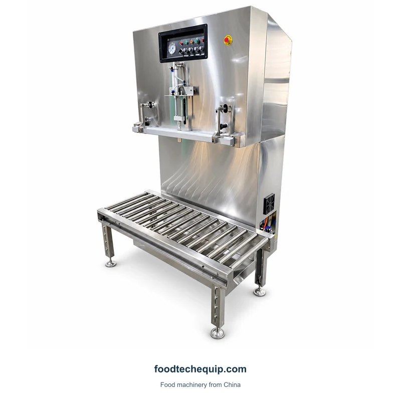

Thiết bị chiết rót
Máy chiết rót chất lỏng trên dây chuyền
Các cấu hình có 2, 4, 5, 6, 8, 10 hoặc 12 đầu chiết dùng bơm từ. Hãy so sánh thể tích chiết và kích thước chai theo từng cấu hình.
Xem thiết bịFTE cung cấp và xuất khẩu thiết bị chế biến và đóng gói thực phẩm từ Từ Châu, Trung Quốc. So sánh các thiết bị trộn, định lượng, chiết rót, hàn kín và đóng gói. Khi yêu cầu báo giá, hãy cung cấp loại sản phẩm, kích thước bao bì và năng suất cần đạt.
Hướng dẫn lắp đặt · Đào tạo người vận hành · Phụ tùng thay thế · Hỗ trợ từ xa




Thiết bị cho sản phẩm phi thực phẩm
So sánh thiết bị cho đổ đầy, đóng gói và đóng gói chân không. Kiểm tra các đặc điểm riêng cho mỗi cấu hình.
Các cấu hình có 2, 4, 5, 6, 8, 10 hoặc 12 đầu chiết dùng bơm từ. Hãy so sánh thể tích chiết và kích thước chai theo từng cấu hình.
Xem thiết bị
Dây chuyền chiết rót và cân bột có bộ cấp liệu, băng tải và bộ điều khiển tích hợp.
Xem thiết bịMáy đóng gói hạt vào túi nhỏ kiểu đứng, có phễu nạp và bộ kéo màng. Tốc độ ghi nhận là 10–23 gói/phút.
Xem thiết bị
Máy dùng màng cuộn để tạo túi định hình cho chất lỏng hoặc xốt. Tốc độ ghi nhận của cấu hình 200 là 35–100 túi/phút.
Xem thiết bịMáy đóng gói hút chân không ngoài dạng đứng, có bàn con lăn để đỡ gói tại vị trí thao tác.
Xem thiết bị
Máy đóng gói hút chân không dạng đứng đặt sàn, có bàn đỡ phía trước và thanh hàn phía trên.
Xem thiết bịHãy chia sẻ vật liệu, định dạng bao bì và nhu cầu sản xuất. Chúng tôi sẽ giúp anh tìm kiếm thiết bị phù hợp và hỗ trợ anh cần.
Giới thiệu về Food Tech Equipment Co., Ltd. ↗
FTE có thể giúp đỡ như thế nào ↗Vật liệu, kích thước thùng hoặc túi, công suất sản xuất cần thiết và điểm đến.
Xem lại các mô hình, cấu hình và tính tương thích liên quan.
Thảo luận về báo giá, hướng dẫn lắp đặt, đào tạo và phụ tùng.
Bắt đầu với vật liệu, gói và xử lý hoàn tất. Các hướng dẫn viên của chúng tôi giải thích những câu hỏi để hỏi trước khi so sánh cấu hình.
Xem hướng dẫn chọn lọc ↗Hãy cung cấp loại sản phẩm, cách đóng gói và năng suất cần đạt.